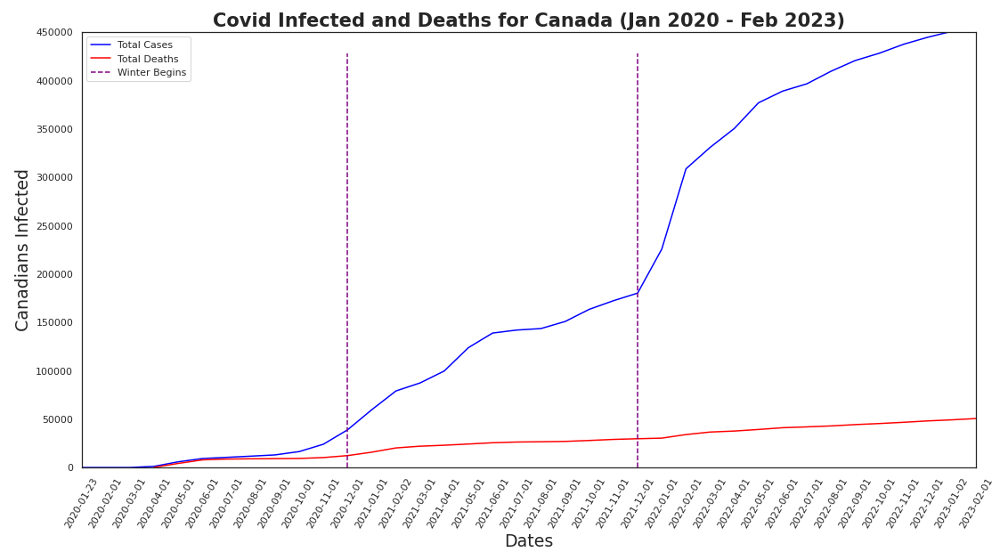
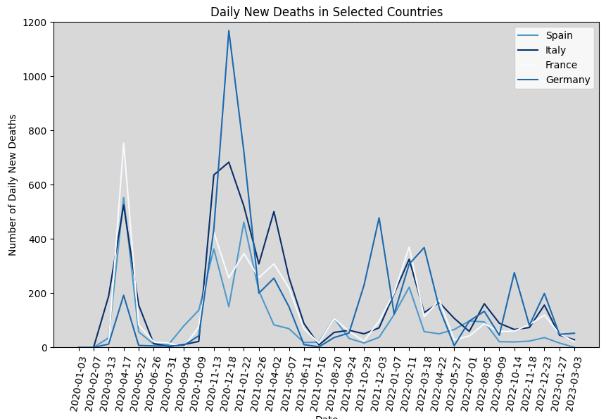
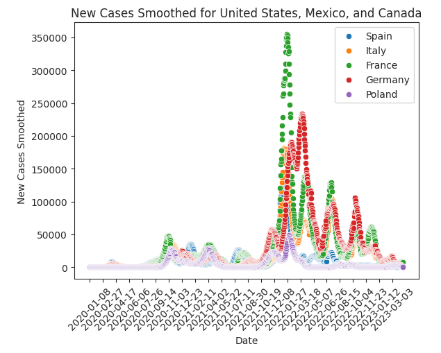
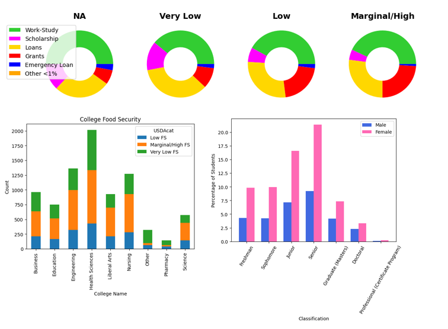

Cesar Vazquez | Data Visualizations
In this visualization we get some data from All of Us to plot the number of people in Canada infected with covid-19 and see how it relates to the deaths related to covid-19.
Tasks:
- Load in the data.
- Clean the data.
- Select only Canada.
- Create the line graph of the total number of infected and total number of deaths in Canada.

In this visualization we will graph 4 European countries to compare how many new deaths they have gotten every day throughout the pandemic.
Tasks:
- Import the necessary libraries as well as reading the file in.
- We now filter the data to include only the rows for Spain, Italy, France, and Germany.
- Calculate the median age for each country. For each country we will assign a darker colored blue for higher median age and a lighter blue for the lower median age.
- A line graph is made of the daily new deaths, set the y-axis limit so we see the values more clearly, and set the titles for the axes.

In this visualization we graph the number of new cases 5 different European countries report during the pandemic.
Tasks:
- Import the necessary libraries as well as reading the file in.
- Filter the data to include only the European countries, namely Spain, Italy, France, Germany, Poland.
- Use a scatterplot to graph the data obtained from All of Us.
- Apply some smoothing so the data is easier interpreted.

We investigate any relationships between variables such as Funding, Classification, Ethnicity, and Gender using visualizations.
Tasks:
- Install pywaffle to be able to make waffle graphs.
- Import the necessary libraries as well as reading the file in.
- Graph food security based on the the different types of government funding using a waffle charts where each square represents 1%.
- Provide another view of the charts, so the proportions are seen better.
- Output the number of entries in each of Classification, College Choice, and Food Security.
- Compare College Choice with Food Security using a Stacked Bar Plot.
- Compare Classification with Food Security using a Stacked Bar Plot.
- Next, we output the number of entries in each of Classification, College Choice, Ethnicity and Gender.
- Compare differences of concentration in gender when it comes to degree progress (classification).
- Graph histograms of different ethnicities and their completion of degrees.
